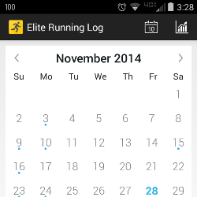
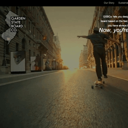
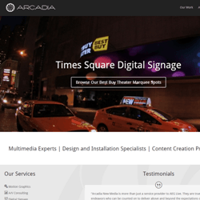
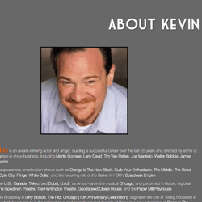
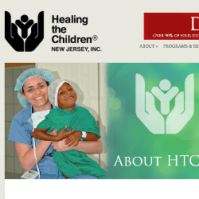
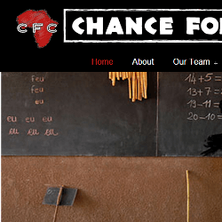
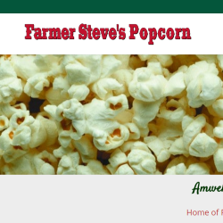

CS Projects
I have several projects that I have worked on or are currently working on. You can find most of the code on GitHub.Java
Elite Running Log is a calendar based running log built to help keep track of mileage, shoes, pace, and more. It is designed
to be light-weight, simple, and easy. Made for runners who don't run with their phones.

Elite Running Log Android App
Elite Running Log Android App
Javascript
Website Designs
Garden State Board Co. was an idea to build skateboards and longboards out of custom materials to enhance the personality
and features of the board. I designed the logo and the front page.

Garden State Board Co.
Garden State Board Co.
Wordpress Sites
I also do some Wordpress site development and design.Clients

Arcadia New Media Services
Arcadia New Media Services

Kevin Carolan Personal Site
Kevin Carolan Personal Site

Healing the Children New Jersey
Healing the Children New Jersey

Chance for Change Charity
Chance for Change Charity

Farmer Steve's Popcorn
Farmer Steve's Popcorn

Pour House Restaurant